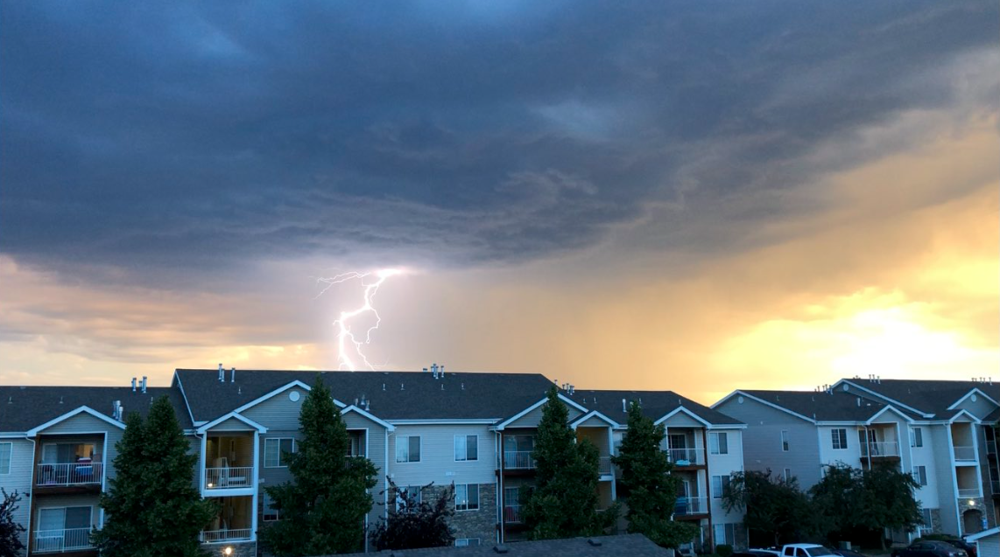

WxFL Website
For current season scores, click here
For the WxFL Transaction Form click here

Recent Activity
1/27/2019: Flournoy added Des Moines IA and dropped Billings MT
1/13/2019: Reppert added Philadelphia PA and dropped Dallas TX
1/13/2019: Flournoy added Harrisburg PA and dropped Philadephia PA
1/13/2019: DeFlitch added Columbus OH and dropped Blacksburg VA
1/13/2019: DeFlitch added Pittsburgh PA and dropped Talahassee FL
1/13/2019: Adams added St. Louis MO and dropped Tulsa OK
1/13/2019: Boyer added Boston MA and dropped Harrisburg PA